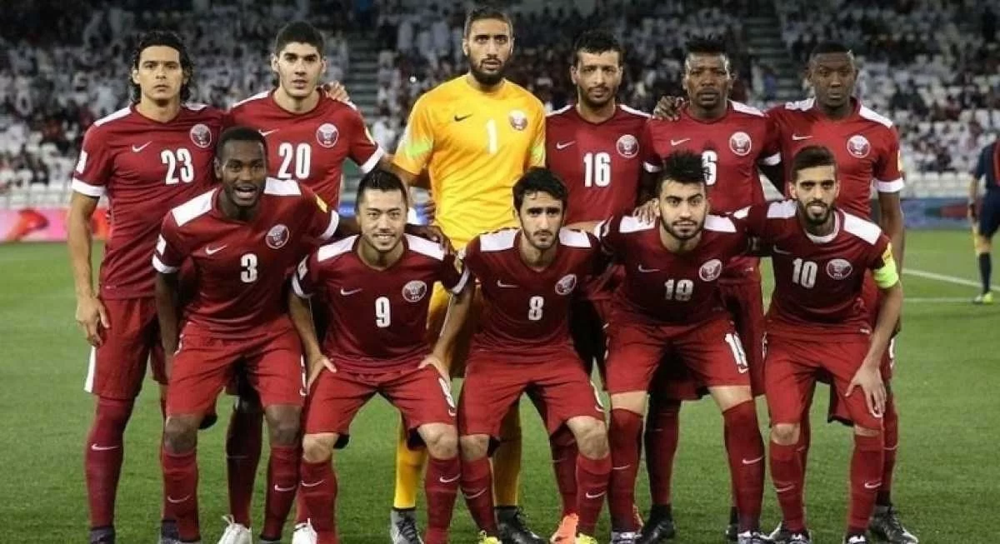
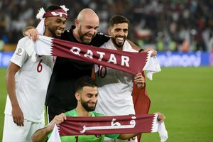

A Seleção Catariana de Futebol representa o Catar nas competições de futebol da FIFA. O Catar sediará a Copa do Mundo FIFA de 2022, e consequentemente participará de sua primeira Copa com a sua seleção. Em 2019, o Catar conquistou o título mais importante de sua história, a Copa da Ásia de 2019, vencendo o Japão, por 3–1. A final foi disputada em Dubai, nos Emirados Árabes Unidos.
Félix Sánchez: é mais um técnico da armada espanhola que ganhou além mar. Deixou o país de Cervantes após 10 anos trabalhando na base do Barcelona para desbravar o Oriente Médio. Foi vinculado à Aspire Academy, por onde também passou o ex-técnico colorado Miguel Ángel Ramírez. Depois de trabalhar nas divisões inferiores da seleção catari, assumiu a equipe principal em 2017.
| Principais Jogadores | |||
|---|---|---|---|
| Nome | Idade | Altura | Peso |
| Ró-Ró | 32 | 1,80M | 73Kgs |
| Abdelkarim Hassan | 29 | 1,83M | 72kgs |
| Boualem Khoukhi | 32 | 1,88M | 78kgs |
| Salem Al Hajri | 26 | 1,83M | 68Kgs |
| Bassam Al Rawi | 24 | 1,75m | 77Kgs |
| Tarek Salman | 24 | 1,80m | 71Kgs |
| Musaab Khidir | 28 | 1,75M | 80kgs |
| Ahmed Suhail | 23 | 1,83M | 68kgs |